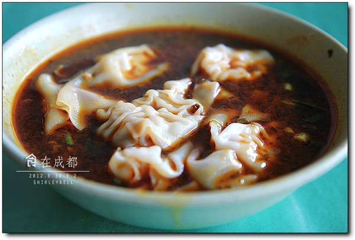
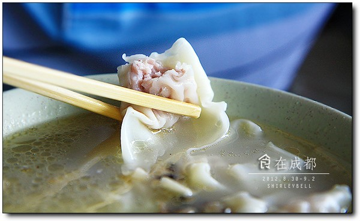
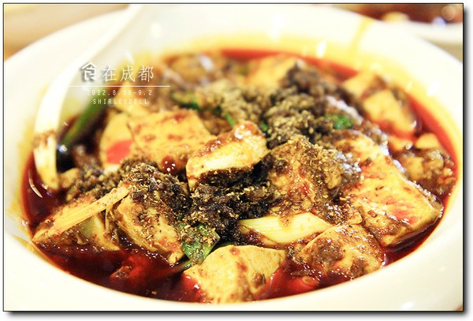

Walking away is the most beautiful luxury and the most brilliant freedom in life.
Coveted the charming food of Chengdu for a long time and yearned for Chengdu's leisurely life. This time it happened to be false, so decisively decided to go to Chengdu.
Travel is from a place where you are tired of getting tired of being bored. I am not tired of Nanjing, but the complicated and busy work makes me breathless. Travel is the best way to escape temporarily.
Homework is not detailed, scenic spots tourism planning also did not think well, so on the road. They don't buy the maps. They rely on the "Google map" and "public comment" on the mobile phone every day, print the Chengdu gourmet strategy, visit the scenic spots, taste the food, and the unknown travel, although sometimes surprise and surprise.
I saw an article in the magazine N years ago, 'plan a small escape', leaving a deep impression. The reason for the small escape is also the reason why I always give myself a "lazy" reason.'
"Every day of small escape, is the so-called" steal "half day leisure, even if a quiet afternoon tea, eating a piece of chocolate, is also a method of decompression, to find a small way to escape, not in the dream of painting a large escape route, is the real" live in the present! "
'If you know how to run away, our emotions will not work out, and if you paint a big cake for yourself every day, and continue to endure a life of extreme hunger in the spirit, I am afraid that a big cake is eaten, and the moods and pressure cookers will explode first. ''
Detailed Chengdu travel notes will be sent later.
"Copying hands" is a special way for people in Sichuan to recognize "ravioli".
Started in the 40s of the last century, at that time, at that time, some of the Zhang Guangwu and other guys in Chunxi Road 'thick flower tea club' consulted a joint-venture to open a copy hand shop. The main features of the Dragon hand are: thin skin, soft stuffing, and fresh soup. The hand skin is made of super flour and a small amount of ingredients, kneaded and kneaded slowly, and rolled into a translucent shape, such as thin paper and fine silk. The meat is tender and smooth, and the flavour is delicious. The original soup of dragon hand is made from the meat of chicken, duck and pig by stewing slowly. The soup is white, thick and fragrant.
The husband called a bowl of seafood. There are letinous edodes, bamboo shoots and some seafood, and the soup is very delicious.
Thin skin, tender meat, fresh soup, indeed, is one of the snacks in Chengdu.
I called a hot and sour bowl. For me who like spicy food, I feel better than seafood. There are also sauerkraut in the soup, with spicy spicy oil, sour and spicy, good hands, soup is also very good. However, it may be a little too bad to eat this on an empty stomach early in the morning.
At noon, a "Chen Mapu tofu" recommended by the Internet is also a well-known store in Chengdu with several branches. It is estimated that people in Chengdu know this house, because when we can't find the place, we ask several passers-by, and we all know where they are.
Chen Ma Po tofu is a famous brand of "China Time-honored Brand", which is named by the state. It started in the early Qing Dynasty tongzhi (1862), opened in Beijiao, Chengdu Wanfu bridge. Formerly known as Chen Xingsheng restaurant, the chef is Chen Chunfu's wife. The color and lustre of Chen's beancurd is red and bright, the beef grain is crisp and fragrant, the jute, the spicy, the fragrant, the crisp, the tender, the hot, the whole, and the Sichuan bean curd is very fast. When a good person looks at Chen's face, he will play the "Chen Ma Po tofu". As a result, the shop is crowned with 'Chen Mapo bean curd'. In the late Qing Dynasty, Chen Mapu tofu was listed as a famous food in Chengdu.
Two people eat less, ordered a "Mapo Tofu" and a "couple lung tablet".
The Mapo Tofu is amazing enough. Does Nanjing's Mapo Tofu have such a rich sauce? Absolutely not.
On micro-blog, we saw authentic video tutorials of Mapo Tofu. There are nearly more than 10 kinds of light seasoning.
Stir it lightly and stir the top seasoning. Tofu is very tasty. It looks very spicy, but it's not spicy. At last, my husband could not bear to feel numb. His tongue felt like bubbles.
Pork Lungs in Chili Sauce。
The lungs of the husband and wife bought from the Nanjing restaurant also look different. It is still a heavy flavoring sauce, spicy and spicy, and even a husband who has always been less spicy and spicy.
On the first day's dinner, I went to eat the authentic Sichuan flavor hotpot "Shu nine fragrance", which is also one of the ten hotpot in Chengdu.
Chengdu hotpot is spicy and spicy early, so we did not dare to order the whole hot pot and ordered a mandarin duck pot. As soon as the pot comes up, it feels funny. The white pot is surrounded by a small circle of hot saucepans. The hot pot in Chengdu is mainly hot.
In fact, I really want to see the same kind of hot pot as the "Nine Palace" style. It looks very interesting, but not all spicy food, but unfortunately it missed.
There are only two kinds of seasoning for hot pot: "dry dish" and "oil dish". The oil saucer is sesame oil. I made a picture below the dry dish. There are five kinds of materials -- pepper, sesame, pepper, and I don't know. On the table, a bowl of garlic paste and a bowl of coriander were placed on the table. So I didn't taste a fresh dish or an oil dish. It turns out that the oil saucer is better. The saucai is already spicy and spicy, and the cooked food is delicious with garlic sauce + cilantro + sesame oil.
-_-|||Roll, hot oil! Look, the red soup is tempting. I asked myself to be able to eat spicy people, but after eating a large half of the red pot, it was really hot. Two people had a tear in tears, and finally changed to the white pot.
⊙﹏⊙"Public comment" is turned out. What is the recommended food for fire? A thousand layers of goose, goose sausage, nine spice beef, and some vegetables.
Goose sausage chopsticks are pressed down and scalded for five seconds. Beef is also very tender. One thousand layers of belly had not been photographed, so the waiter gave me a whole pan.